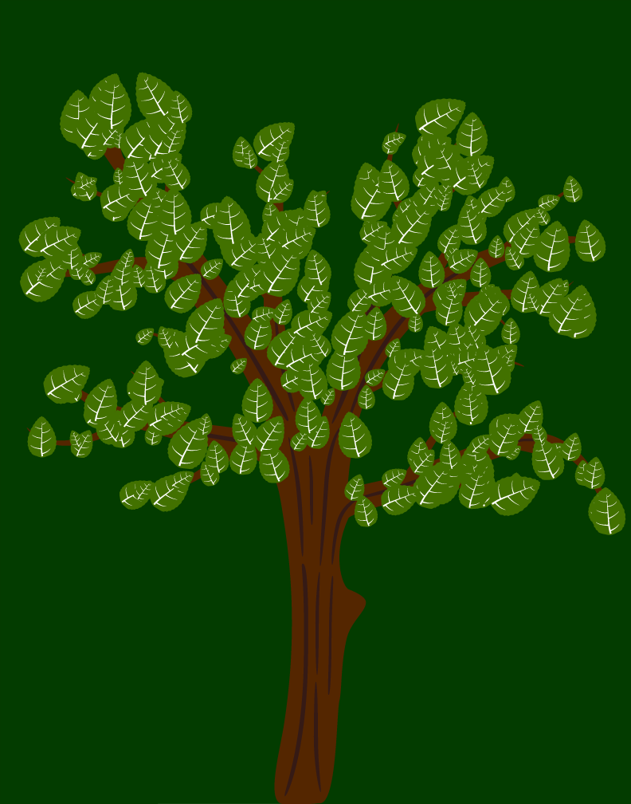
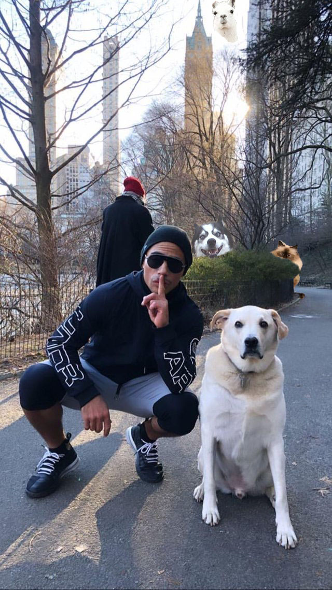

Dada Poem 2019
I think that in this project we learned more of the basics for photoshop and how to use our own content to create original work. During this project we learned how to scan images from magazines into photoshop along with learning more of the basics for photoshop.
Sequential Art 2019
I think that this assignment was given so that we could learn how to use Adobe Illustrator to make different types of artwork. I feel that during this assignment we acheived this along with learning some more about Illustrator
Icons
I believe that this assigment was given so we could give our own ideas shape. I think that we achieved this and more like learning to use drop shadows.
Photoshop Battle 2019
I believe that this assignment was given so we could learn the basics of photo shop. I feel that we did learn how to use photoshop at a basic level.

Graffiti Stencil 2019
I think that this project was given so we could get some hands on experience with various art materials. During this assignment we got to do some hands on actvity with spray paint and stencils.
Stock Cinemagraph 2019
I think that this assignment was given so that we would get some experience with the timeline window and cinemagraphs. During this assignment i beleive that we achieved an ability to make cinemagraphs along with using different methods to select the material in the image
Original Cinemagraph 2019
I believe this assignment was given so that we could make a cinemagraph with our own images. With this project we learned how to gather our own materials.